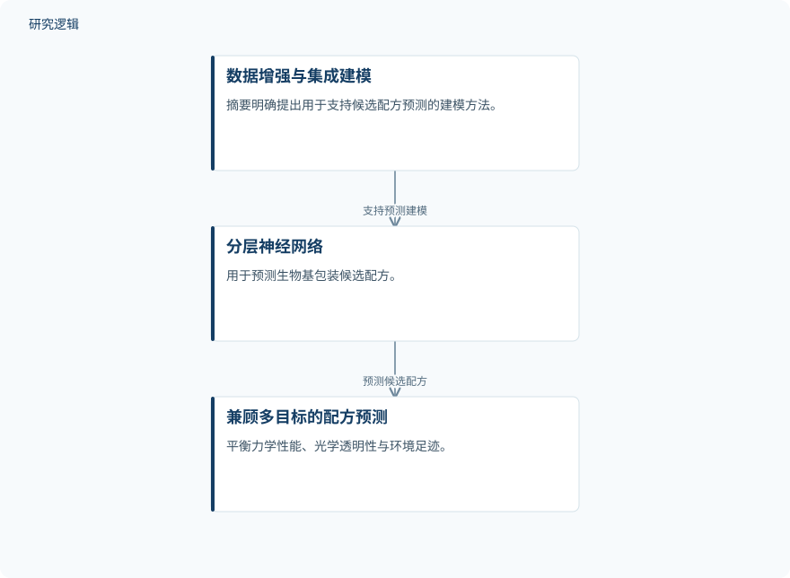

摘要解读
机器人与机器学习集成驱动的可持续生物基保鲜包装设计
Sustainable biobased packaging via integrated robotics/machine learning workflow for improved postharvest preservation
解读更新 2026-10-31 09:20 · 依据公开摘要整理，未核验全文细节
生物基包装如何兼顾材料性能、食品保鲜与环境负担？这项研究将机器人自动化与机器学习等方法整合，用于探索复杂配方空间，其阅读价值在于理解多性能约束下的材料发现思路，而不只是寻找塑料的替代原料。
文章目录
替代塑料，难点不止是更换原料
摘要指出，依赖石油基塑料包装会加重环境负担，而且这类包装缺少内在的抗微生物保护。生物基材料提供了替代方向，但可选组分繁多，传统试错效率有限，配方还要同时满足多种性能要求。
因此，这项研究面对的不是单一性能优化，而是如何在力学性能、光学透明性和环境足迹之间取得平衡。材料来源的改变与包装综合表现的改善，需要放在同一设计问题中考虑。
把自动化、预测与环境评价纳入同一流程
研究构建了整合机器人自动化、机器学习预测、密度泛函理论和生命周期评价的工作流，以加速生物基包装材料发现。摘要明确列出了这些方法，但没有展开各环节的数据接口、计算设置及具体分工。
在配方预测方面，研究结合数据增强与集成建模，使用分层神经网络预测大规模候选配方，并兼顾力学性能、光学透明性和环境足迹。这里需要区分：模型预测的候选配方规模，不等于实际制备或独立测试的样本规模。
依据摘要整理的配方预测关系示意


仅概括摘要明确描述的数据增强、集成建模与分层神经网络预测关系，不代表论文原图或完整实验流程。
下载 SVG图示关系说明
实线表示相邻阶段的信息流，虚线表示跨阶段联系或反馈。
数据增强与集成建模 → 分层神经网络：支持预测建模；分层神经网络 → 兼顾多目标的配方预测：预测候选配方
所得包装兼具耐水、抗微生物与阻隔表现
摘要报告，所得生物基包装具有增强的耐水稳定性、有效的抗微生物活性和较高的阻隔性能，并显著延长了黄瓜与鳄梨的货架期。这些是摘要明确陈述的结果，但其中没有给出提升幅度、保鲜时长或具体比较条件。
研究还发布了数据共享平台，提供正向预测、逆向设计和环境影响功能，以支持社区使用。平台功能的发布属于已报告成果，但不能据此认定其在其他材料体系中的设计效果已经得到验证。
样本、对照与适用范围仍需查阅正文
仅凭本次完整摘要，无法判断实际实验样本量、配方组成、训练与测试数据划分，以及数据增强后的模型验证方式。也无法确定耐水、抗微生物和阻隔测试采用了哪些对照、条件及统计方法。
黄瓜与鳄梨的保鲜结果不能直接外推到所有食品；环境足迹的比较也需要结合生命周期评价边界理解。上述信息是摘要未展开的内容，并不意味着论文没有开展相关实验或分析。
阅读启发：关注逆向设计如何处理多目标取舍
阅读启发：对关注生成式设计的读者，值得进一步阅读的是，平台如何把目标性能转化为配方建议，以及力学性能、透明性与环境足迹之间的取舍如何表达。摘要支持提出这些问题，但尚不足以判断逆向设计的可靠性、适用边界或相对优势。
以上为本站阅读启发与建议，不是论文已验证的结论。